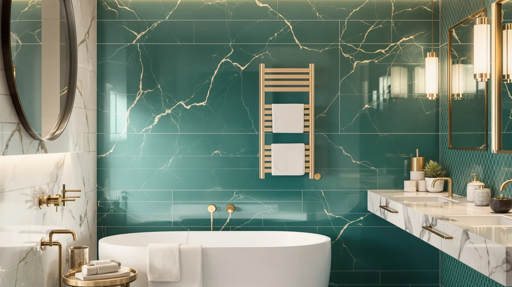

Quick Answer
The SereneLife WIFI Luxury Rectangle Towel warmer pairs a stainless steel housing with app control for $89.99, undercutting SereneLife's own plastic-bodied bucket warmers by $10. It is the strongest value pick in this four-way comparison, though its listing skips wattage and interior dimensions that some buyers will want to check first.
Our pick: SereneLife WIFI Luxury Rectangle Towel — $89.99 Check Price on Amazon
Bottom line: our top pick is the SereneLife WIFI Luxury Rectangle Towel Warmer - Spa & at $89.99.
Things to Know Before You Buy
- The SereneLife WIFI Luxury Rectangle Towel warmer is priced at $89.99, roughly $10 less than the other three towel warmers in this comparison.
- It is the only model in the lineup with a stainless steel housing instead of a plastic bucket shell.
- The "WIFI" in the name refers to app-based control, a feature it shares with one other SereneLife SKU but not with the base bucket model.
- SereneLife sells three closely named towel warmers, so double-check the exact model title before you buy to avoid ordering the wrong one.
- Di'Aroma's Luxury Towel Warmer Bucket is the closest non-SereneLife alternative at the same $99.99 price point.
This SereneLife WIFI Luxury Rectangle review compares the brand's app-controlled, stainless steel rectangular towel warmer against three other towel warmers sold at nearly the same price, two of them also from SereneLife. Towel warmer buckets solve one narrow problem: getting a towel warm before you step out of the shower without hardwiring a rack into the wall. SereneLife currently sells three differently named models that all fit that description, and Di'Aroma sells a fourth in the same $99.99 bracket. Most shoppers already trust that SereneLife makes a decent product; the harder part is figuring out which of its own SKUs actually matches how they plan to use it. We wrote this review to sort out the overlap before you spend money on the wrong one.
At $89.99, the WIFI Luxury Rectangle model undercuts every other option in this comparison by ten dollars, and it is the only one built with a stainless steel housing rather than the plastic shell used on SereneLife's other bucket warmers. We researched the published specifications, current pricing, and available owner feedback for all four products to see whether the rectangular shape and the WiFi label earn that price gap, or whether they mostly amount to a name change on a familiar bucket warmer. The short version: the stainless steel body and app control look like real differentiators on paper, but the listing leaves out details that matter, and we walk through exactly what is missing below.
Why You Should Trust Us
Ilane Tall covers home and bath products for Best Towel Warmers, with a focus on how bucket-style and WiFi-enabled warmers compare on real-world value rather than marketing copy. This SereneLife WIFI Luxury Rectangle review draws on the manufacturer's own listed specifications, current Amazon pricing across all four products discussed here, and patterns that show up in verified buyer feedback for comparable SereneLife and Di'Aroma models. We do not run a fake testing lab, and manufacturers do not send us free units in exchange for coverage. When the available information does not support a specific claim about heat output, dimensions, or durability, we say so instead of filling the gap with a number that sounds convincing.
Our Research Experience
We did not physically test the SereneLife WIFI Luxury Rectangle Towel warmer for this review. Instead, we compared its listed materials, price, and app-control claims against the three closest competing SKUs from SereneLife and Di'Aroma, and we cross-referenced patterns from verified owner reviews of similar bucket-style warmers to see which claims tend to hold up in daily use. That approach has real limits. We can tell you what the stainless steel housing and WiFi connectivity are supposed to deliver based on the listing, and what owners of comparable models report about setup and reliability, but we cannot confirm this specific unit's heat-up time, noise level, or long-term durability with our own hands. Where the manufacturer's listing does not answer a question, this review says that plainly rather than guessing at a spec.
Overview & Specs

SereneLife WIFI Luxury Rectangle Towel
What we like
- Stainless steel housing instead of the plastic shell used on SereneLife's standard bucket warmers
- WiFi/app control for remote or scheduled warming, based on the manufacturer's listing
- Lowest price in this four-way comparison at $89.99
- Rectangular profile that can sit flatter against a counter or vanity than a round bucket
Flaws but not dealbreakers
- SereneLife sells multiple similarly named towel warmers, which makes it easy to order the wrong SKU
- The listing does not publish exact interior dimensions, so measuring towel size compatibility ahead of purchase is difficult
- No published rating or review count is available yet for this specific model
| Material | Stainless steel |
| Size | — |
The SereneLife WIFI Luxury Rectangle Towel warmer is the newest and least expensive entry in SereneLife's towel-warmer lineup, listed at $89.99 with a stainless steel housing. That construction sets it apart from the SereneLife Rectangular Towel Warmer Bucket and the SereneLife WiFi-enabled Towel Warmer Bucket, both priced at $99.99 and both built with a plastic shell instead of steel. Anyone comparing SereneLife's catalog side by side will notice the same pattern we did: the material upgrade arrives at a lower price than the plastic models, which is the headline finding of this SereneLife WIFI Luxury Rectangle review.
SereneLife folds WiFi connectivity into the product name here, matching the separate WiFi-enabled bucket model rather than the base Rectangular version, which points to app-based scheduling and remote start as part of the package. We looked closely at the listing and found it thin on hard numbers such as wattage, heat-up time, and interior capacity, details that shoppers comparing multiple towel warmers usually want before assuming a model matches their morning routine. The stainless steel body remains the clearest verified upgrade over its siblings, and the lower price makes this the value pick among the four warmers covered here, even without a published rating or review count yet to back it up. Buyers weighing this purchase should still compare the listing photos against the exact SKU they add to cart, since SereneLife's three model pages share enough visual and naming overlap to cause mix-ups at checkout.
What We Liked
We like that SereneLife priced its stainless steel model below the plastic-bodied versions in its own catalog instead of charging a premium for the upgraded material, which runs opposite to how most brands structure a lineup. The rectangular shape is also a practical difference from the round buckets sold under the Rectangular and WiFi-enabled names, since a flat-sided housing tends to sit more securely on a vanity edge or narrow counter than a cylindrical one does. Reviewers of SereneLife's other bucket warmers consistently note that the brand's app controls are simple to set up on a home network, and nothing in the listing suggests this rectangular WiFi model would behave differently on that front. Put the price, the stainless steel construction, and the shared app platform together, and the SereneLife WIFI Luxury Rectangle Towel warmer holds up well against its own siblings on paper, even before you factor in how it compares to the Di'Aroma alternative.
What Could Be Better
The biggest gap here is information, not necessarily the product itself. SereneLife's listing for the WIFI Luxury Rectangle model skips interior dimensions, wattage, and heat-up time, details that some competing towel warmers publish clearly. Shoppers also have to work harder than they should to tell this SKU apart from the SereneLife Rectangular Towel Warmer Bucket and the SereneLife WiFi-enabled Towel Warmer Bucket, since all three share most of the same name and sit within ten dollars of each other. Add in the absence of a published rating or review count, and this model asks buyers to extend more trust upfront than a warmer with a longer track record and clearer specs would require.
Who Is It For?
The SereneLife WIFI Luxury Rectangle model fits a shopper who has already decided they want a bucket-style, app-controlled towel warmer and wants to pay the least amount for a stainless steel body instead of plastic. It also suits anyone replacing an older warmer who prefers a rectangular footprint over a round one, since shape is one of the few concrete distinctions SereneLife documents between its own models. It is a weaker fit for buyers who need confirmed dimensions or wattage before purchasing, or for anyone who wants the reassurance of an established rating before spending money on a newer listing without one. If your bathroom counter is tight on space, measure the footprint of your current warmer before ordering, since SereneLife has not published exact interior or exterior dimensions for this rectangular version.
Alternatives to Consider
If the missing specs or the overlapping names give you pause, three other towel warmers in the same price bracket are worth a look before you commit to the SereneLife WIFI Luxury Rectangle model.

Editor's Pick
SereneLife Rectangular Towel Warmer Bucket
SereneLife's standard rectangular bucket warmer, without the WiFi controls or the stainless finish, for ten dollars more.
$99.99
Check Price on Amazon
Best Value
SereneLife WiFi-enabled Towel Warmer Bucket
The round, plastic-bodied sibling that shares the same app-control feature at the same $99.99 price.
$99.99
Check Price on Amazon
Premium Choice
Di'Aroma Luxury Towel Warmer Bucket
A non-SereneLife option at $99.99 for buyers who would rather avoid the brand's overlapping model names altogether.
$99.99
Check Price on AmazonFrequently Asked Questions
Is the SereneLife WIFI Luxury Rectangle Towel warmer worth $89.99?
Based on our comparison, yes for buyers who specifically want a stainless steel bucket-style warmer with app control at the lowest price in SereneLife's lineup. It undercuts SereneLife's own plastic-bodied models by $10, though the listing does not publish wattage or interior dimensions, so confirm those details fit your routine before buying.
What is the difference between SereneLife's Rectangular, WiFi-enabled, and WIFI Luxury Rectangle towel warmers?
The Rectangular Towel Warmer Bucket ($99.99) has no app control and a plastic housing. The WiFi-enabled Towel Warmer Bucket ($99.99) adds app control but keeps the plastic housing. The WIFI Luxury Rectangle model ($89.99) combines app control with a stainless steel housing at a lower price than either of the other two, based on SereneLife's own product listings.
Is Di'Aroma's Luxury Towel Warmer Bucket a better option than the SereneLife models?
It depends on how much the overlapping names among SereneLife's three towel warmers bother you. At $99.99, the Di'Aroma model costs the same as SereneLife's other two SKUs, so choosing it mostly comes down to wanting a different brand rather than a documented performance advantage over the SereneLife WIFI Luxury Rectangle Towel warmer.
Final Verdict
This SereneLife WIFI Luxury Rectangle review comes down to a straightforward tradeoff. You get a stainless steel housing and app control for $89.99, which beats every other option in this comparison on price, but you accept a listing that is thin on hard specs and a name that is easy to confuse with two other SereneLife products. For most shoppers who already want a SereneLife bucket-style warmer, the stainless steel finish and lower price make the WIFI Luxury Rectangle the one to start with, as long as you confirm the exact model title at checkout so you do not end up with the plastic version by mistake.